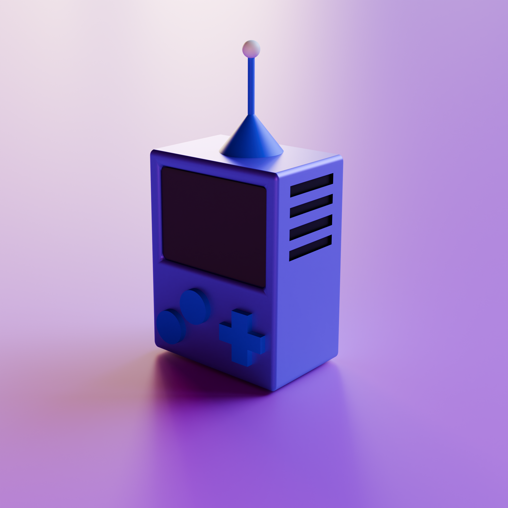
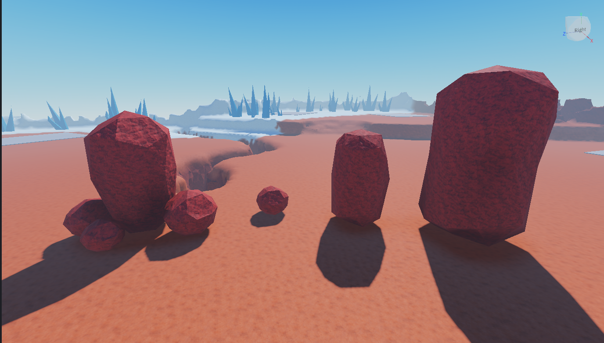
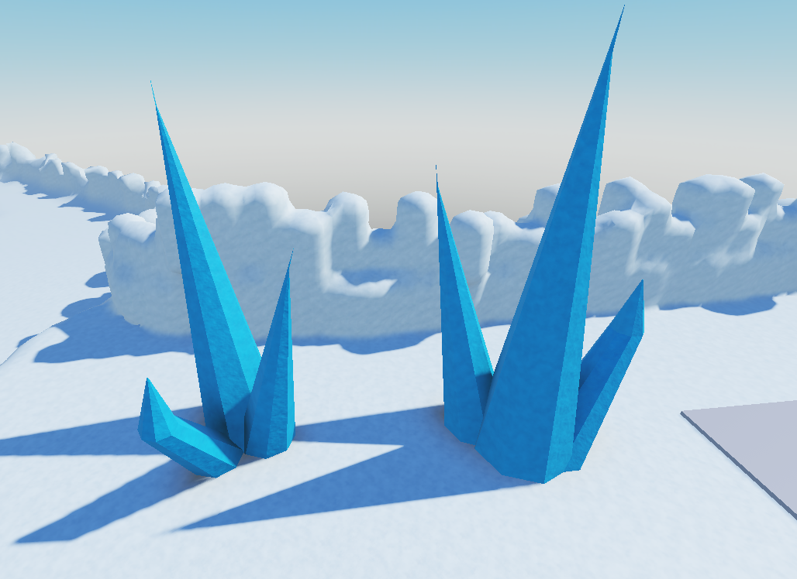
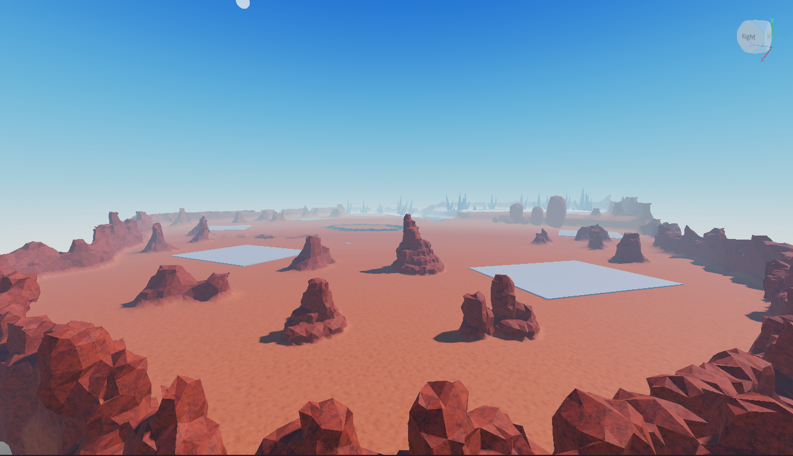
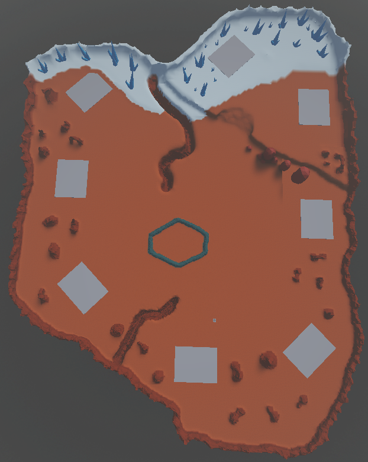
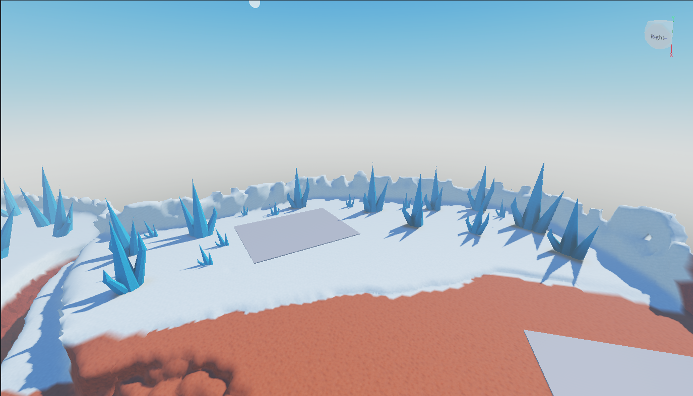
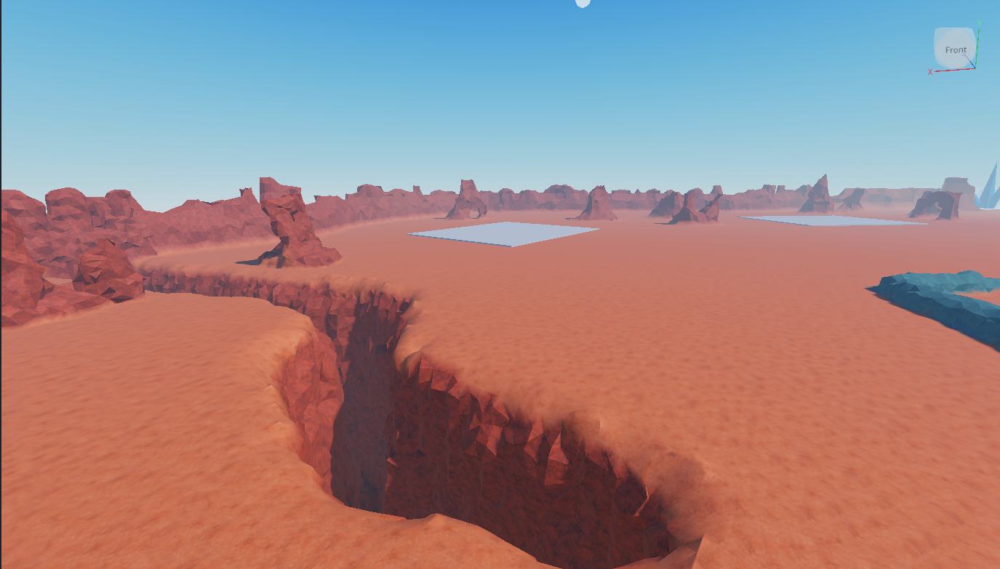
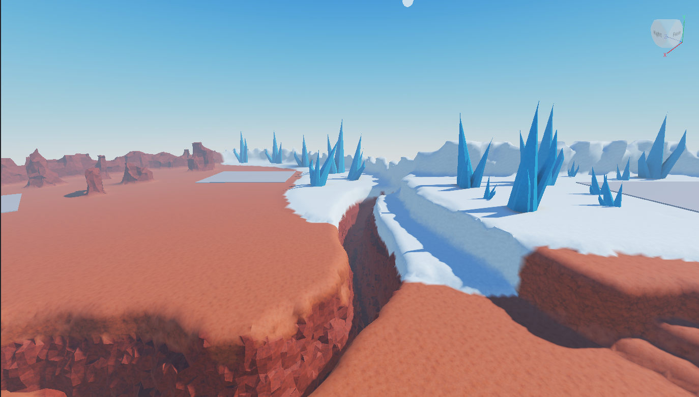

My Creations
 Roblox Game
Roblox Game
Brainrot / Simulator Game
A progression-based jumping simulator with custom low-poly assets, pet systems, upgrade mechanics, and themed worlds.
About this Project
This project is a Roblox game inspired by progression-based jumping simulators. The main gameplay revolves around collecting jump power over time, exploring floating platforms, collecting coins, and unlocking upgrades to reach higher areas. The game was designed with multiple themed worlds in mind, each including different eggs, pets, and visual styles. While the project is still unfinished, the core systems and the first world have already been developed. One of the main goals of this project was improving my experience with game creation, environment design, and 3D asset creation. Most of the assets used in the game were modeled by me in Blender, including trees, grass, rocks, platforms, mountains, and coins. The visual style focuses on a simple low-poly aesthetic with minimalistic environments. Although the project is currently paused, I may continue expanding and polishing it in the future.


 Web Game
Web Game
Website Game — ClashToPlay
A browser-based multiplayer card game inspired by Clash Royale, featuring accounts, rankings, matchmaking, bots, and real-time gameplay.
About this Project
ClashToPlay is a personal web game project developed out of curiosity and experimentation. The project is inspired by competitive card games such as Clash Royale and was built entirely from scratch over the course of approximately two months. The game includes account registration and login systems, online matchmaking, database integration, rankings, multiple playable cards, and battles against both real players and bots. This project helped me improve my understanding of web development, game systems, backend logic, and overall project structure. In addition to programming the game systems, I also managed the website setup, hosting, and domain configuration. The project was created primarily as a learning experience and as a way to explore how multiplayer browser games function from both a technical and gameplay perspective.


 Blender
Blender
3D Modeling Assets
A collection of low-poly 3D models and environment assets created in Blender for personal and game development projects.
Blender Workflow
This section showcases various low-poly 3D assets and environment pieces created in Blender for personal projects and game development. The models mainly focus on stylized and optimized assets suitable for Roblox and lightweight game environments. These include trees, rocks, grass, terrain elements, platforms, buildings, and other decorative props. Through these projects, I have been learning the fundamentals of modeling, asset optimization, environment composition, and workflow organization inside Blender. Most of the showcased assets were created specifically for use in my Roblox projects and prototypes. My current focus is continuing to improve my modeling skills while creating clean and functional assets for game environments.






Client WorkMars Tycoon Map
A client commission — a Mars-inspired tycoon map with snowy terrain, deep canyons, and a volcanic platform centerpiece, built with Roblox's terrain tool and custom Blender props.
About this Project
This map was created as a client commission for a Roblox tycoon game. The brief called for a Mars-inspired environment with snowy areas, canyons, and a volcanic platform in the center. The terrain itself — the canyons, snow areas, and volcanic platform — was built entirely using Roblox's terrain tool, shaping the landscape directly to match the client's vision of a Mars-inspired environment. My Blender contribution focused on the props that populate the map. I modeled 4 different rock variants for the client to place and copy across the terrain, giving the environment natural-looking variety without repeating the same shape. For the icy zones I created 3 spike models, which I then arranged into 3 distinct spike groups with different combinations and scales so each cluster looks unique. The rest of the detail and atmosphere — the snow patches, canyon walls, lava platform — came from the terrain tool itself, with the Blender assets layered on top to break things up and add character. This was my first delivered client project, and it was a good experience working to someone else's brief and making sure the assets I handed over were easy for them to use.



